Séparés par des siècles, Claire et Jamie tentent de survivre chacun de leur côté, tout en portant le poids de leur passé commun. Claire, dans le monde moderne, affronte les défis de sa nouvelle vie, tandis que Jamie, resté au 18e siècle, doit faire face aux conséquences d’une guerre dévastatrice.
LES PERSONNAGES RECURRENTS
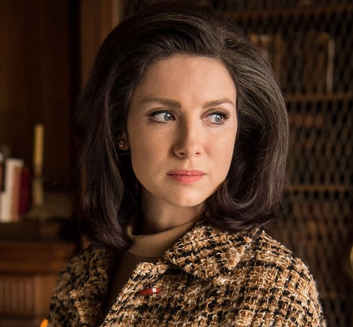
Claire Beauchamp Fraser Randall
"Sassenach", "Dr. Randall"
Docteure
Claire est confrontée à une vie qu’elle n’a pas choisie, loin de l’époque et de l’homme qu’elle aime. Elle tente de reconstruire son quotidien dans le monde moderne, tout en portant en elle le poids de son passé. Déchirée entre devoir, maternité et souvenirs, elle mène une quête intérieure profonde : peut-on vraiment tourner la page quand le cœur reste ailleurs ?.
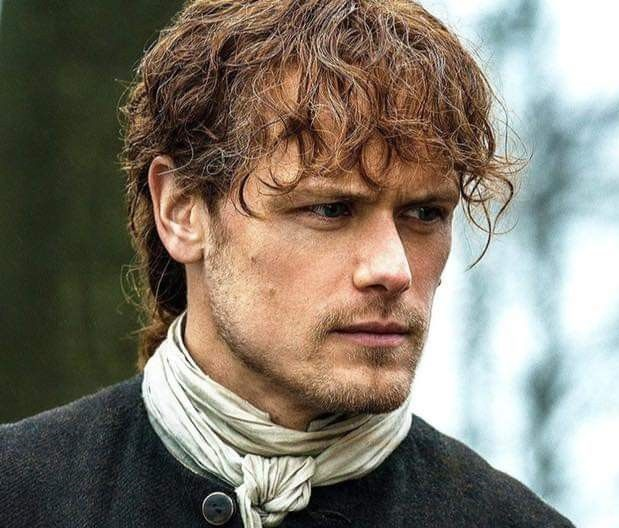
James, Alexander Malcolm MacKenzie Fraser
"Jamie", "Mac Dubh"
Soldat écossais
Jamie se retrouve brisé dans un monde qui a changé autour de lui. Séparé de Claire, il doit survivre à la perte, affronter les conséquences de ses choix passés et trouver une nouvelle raison d’avancer. Entre honneur, solitude et dangers, son chemin est fait de sacrifices silencieux et de luttes pour préserver ce qu’il lui reste de liberté.
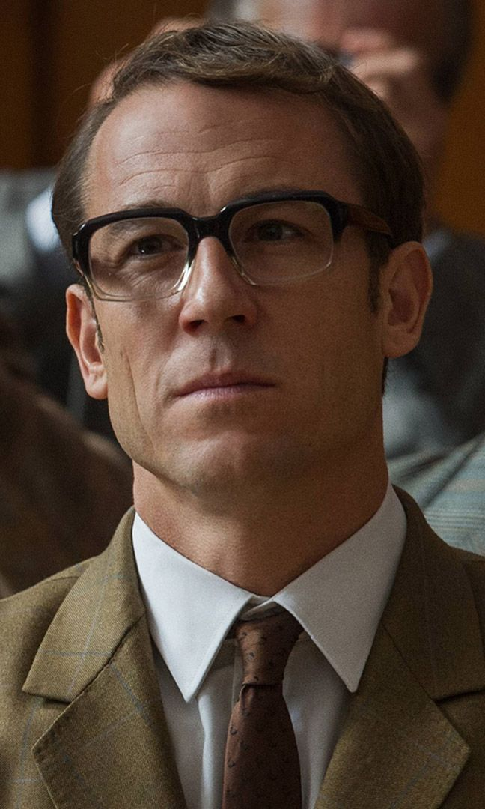
Franck Randall
Professeur
Frank tente de bâtir une vie stable avec Claire après son retour du passé. Mari loyal en apparence, père dévoué pour Brianna, il vit pourtant dans une relation marquée par les non-dits, les tensions… et le souvenir d’un autre homme.
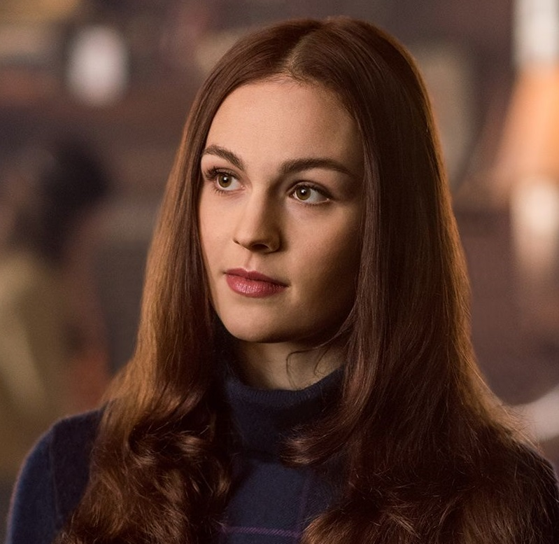
Brianna Ellen Fraser Randall
"Bree"
Etudiante
Brianna Randall, la fille de Claire et Frank, découvre peu à peu la vérité sur ses origines, elle traverse une période de questionnements personnels et identitaires. Sa relation avec Claire évolue, et elle est confrontée à des révélations qui bouleversent sa vision du passé et de sa famille. Son lien avec l’histoire écossaise devient plus profond, et elle commence à se forger sa propre voie, avec courage et curiosité.
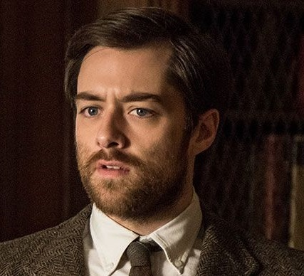
Roger Wakefield MacKenzie
Historien
Roger Wakefield, historien et fils adoptif du révérend Wakefield, devient un personnage plus présent. Curieux, intelligent et profondément attaché à ses racines écossaises, il se retrouve impliqué dans les recherches historiques de Claire et Brianna. Roger commence aussi à se confronter à des choix qui mettront à l’épreuve sa loyauté, sa foi en l’amour et son désir de comprendre le fil du temps.
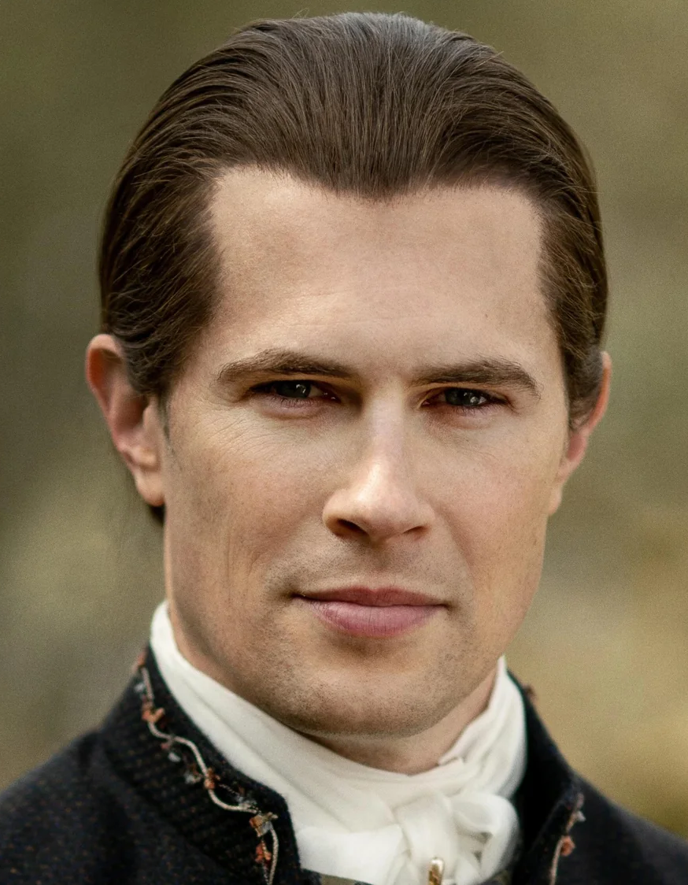
John William Grey
"Lord John Grey"
Soldat britannique
Lord John Grey est un jeune officier britannique aux manières nobles et au sens de l’honneur très développé. Il occupe une position clé dans le contexte politique de l’époque et croise le chemin de Jamie de manière significative. Les deux hommes, bien que très différents par leur statut, leur passé et leur origine, développent une relation marquée par le respect mutuel, la complexité émotionnelle et une forme d’amitié sincère.
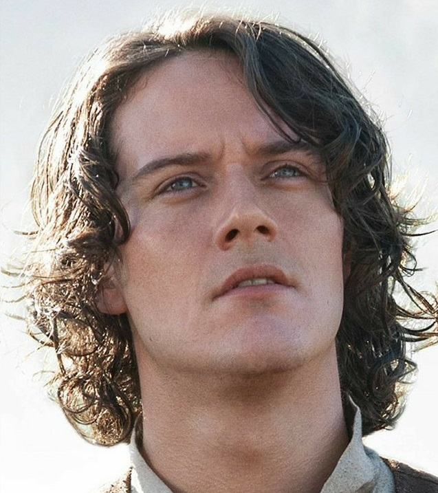
Fergus Fraser
Assistant de Jamie
Fergus, devenu jeune adulte, joue un rôle plus actif et engagé. Toujours fidèle à Jamie, il reste à ses côtés à travers des moments difficiles et prend part à plusieurs événements marquants. Courageux, débrouillard et profondément loyal, Fergus montre qu’il est prêt à tout pour défendre ceux qu’il aime. Il gagne en maturité, prend des responsabilités, et commence à se forger sa propre identité en tant qu’homme.
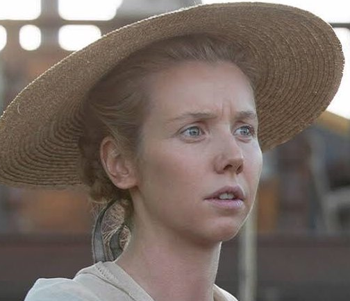
Marsali Jane MacKimmie Fraser
Ecossaise
Marsali fille de Laoghaire, est déterminée, indépendante et pas du genre à se laisser marcher sur les pieds.Sa relation avec Fergus est au cœur de son intrigue cette saison. Leur lien, sincère et passionné, défie les conventions sociales et familiales, ce qui provoque des tensions avec certains personnages.
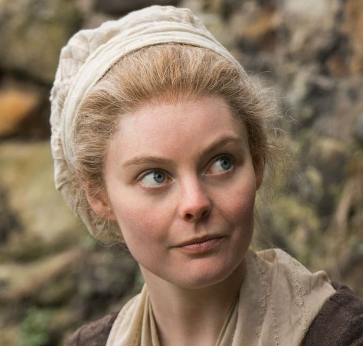
Laoghaire Fraser MacKimmie
Ecossaise
Laoghaire MacKenzie revient dans la vie de Jamie Fraser, avec qui elle partage un passé chargé d’émotions et de tensions. Leur relation est marquée par des choix faits dans des circonstances difficiles, et les conséquences de ces choix refont surface de manière inattendue.
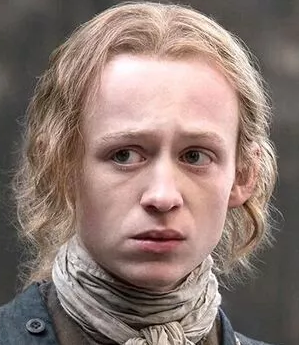
Ian Fraser Murray
"Young Ian"
Assistant de Jamie
Young Ian, le neveu de Jamie Fraser, fait ses premiers pas dans une vie pleine d'aventure. Curieux, débrouillard et un peu téméraire, il cherche à s’émanciper et à prouver qu’il est capable de faire face au monde des adultes. Son attachement à Jamie est profond, et il aspire à suivre ses traces, ce qui le mène à prendre des initiatives parfois risquées.
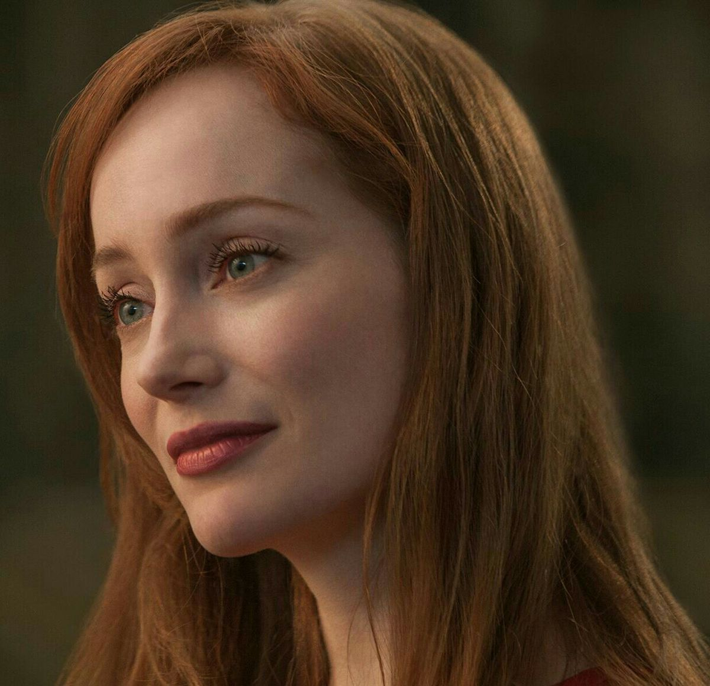
Geilis Edgars Duncan
"Mrs. Abernathy"
Activiste
Geillis Duncan réapparaît après une longue absence, toujours aussi énigmatique et fascinante. Mystérieuse, charismatique et animée par des convictions profondes, elle poursuit ses objectifs avec une détermination redoutable. Son intérêt pour les voyages dans le temps, les prophéties et l’Écosse reste central dans ses actions.